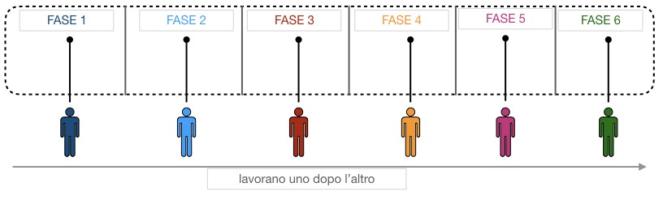

Con la rivoluzione industriale e l'affermarsi di un sistema economico capitalistico si trasformano radicalmente le modalità di svolgimento del processo produttivo: si passa alla divisione del lavoro in base alla quale ogni operaio produceva soltanto una parte del prodotto stesso che poi, assemblata a quella costruita da altri operai, costituiva l'intero prodotto finale.
La divisione tecnica del lavoro portava evidentemente dei vantaggi e precisamente:
- maggiore abilità del lavoratore che, svolgendo sempre la stessa semplice attività, diventava più esperto;
- minore perdita di tempo da parte del lavoratore;
- maggiore possibilità per l'imprenditore di controllare la produttività del lavoratore.
Non va però tralasciato un problema che la divisione del lavoro può determinare, la distrazione del lavoratore, il quale svolgendo un'attività meccanica e ripetitiva, nel tempo perde attenzione e dunque riduce la sua produttività.
Allo scopo di limitare il calo di rendimento, dovuto alla ripetitività dell'attività svolta, l'imprenditore può decidere di far ruotare il lavoratore stesso, dopo un certo periodo di tempo, in modo tale da sollecitare l'attenzione, senza rinunciare alla sua esperienza.